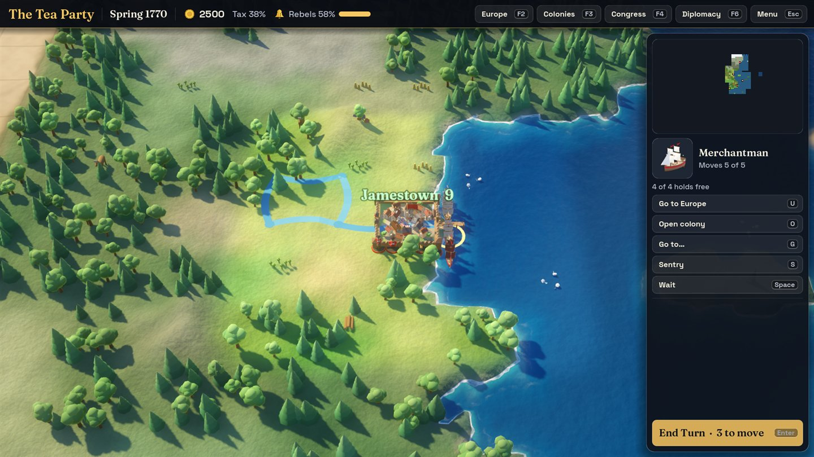
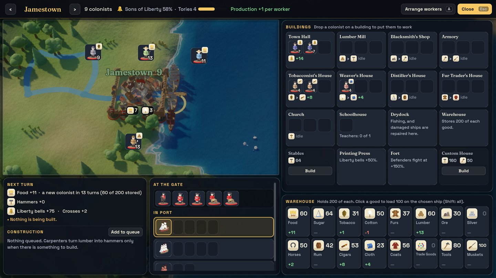
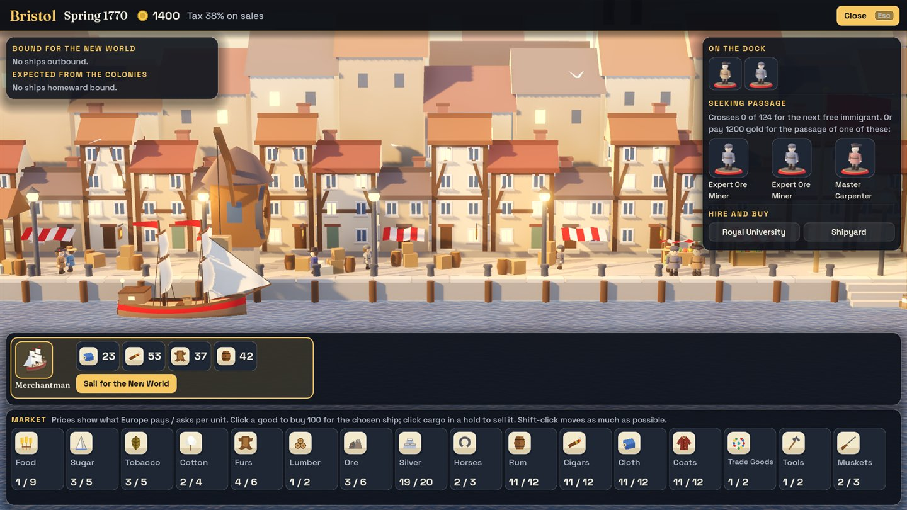
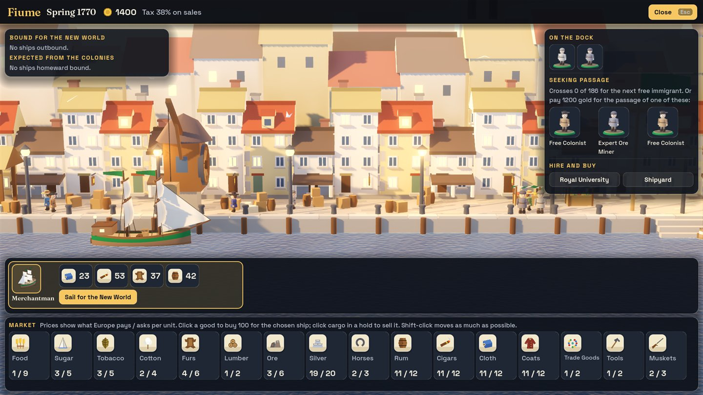

Five nations
Sail for England, France, Spain, the Netherlands or Hungary. Each has its own advantage, home port and way of building.
The Tea Party: Break with the Crown is an original turn-based strategy game of the age of sail. Plant colonies, put every colonist to work, trade with the old world, deal with rival powers and native nations, and in the end defy your King.
Free, in your browserPlay The Tea Party
Jamestown in 1770, on the eve of revolution.
A full campaign from 1492, or a short one that starts in 1770 with four grown colonies ready to declare independence.
Sail for England, France, Spain, the Netherlands or Hungary. Each has its own advantage, home port and way of building.
Every colonist has a trade. Put farmers on fields and smiths in the forge, and see exactly what each will make next turn.
Limited holds, crossings that take turns, prices that move with what you sell, taxes that rise, and trade routes that run themselves.
Eight native nations and three rival powers trade, make demands, ally, and go to war by land and by sea.
Ring the liberty bells, seat a Continental Congress, declare, and hold out against the King's expeditionary force.
It runs in the page. No account, no ads, no purchases. Your saved games stay in your browser.



Choose New expedition, pick a Crown and leave "Guide me through the first voyage" ticked. You need a computer with a recent browser (Chrome, Edge, Firefox or Safari), a keyboard and a mouse. The first load is about 40 MB.
This is an early version: expect rough edges.
The Tea Party has no account, no ads and no analytics. This page and the game load nothing from other sites and send nothing anywhere: saved games and settings are kept by your browser on your own device, and clearing this site's data deletes them.
The Tea Party is an original game. Its code, models, maps, sound and text were made for it. Built with Godot Engine; the lettering is Fraunces and Space Grotesk. Licences.